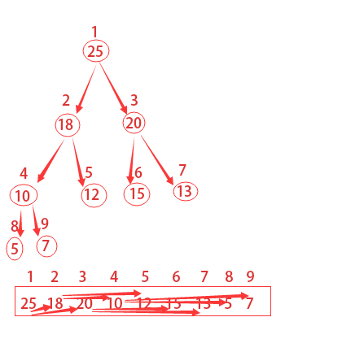
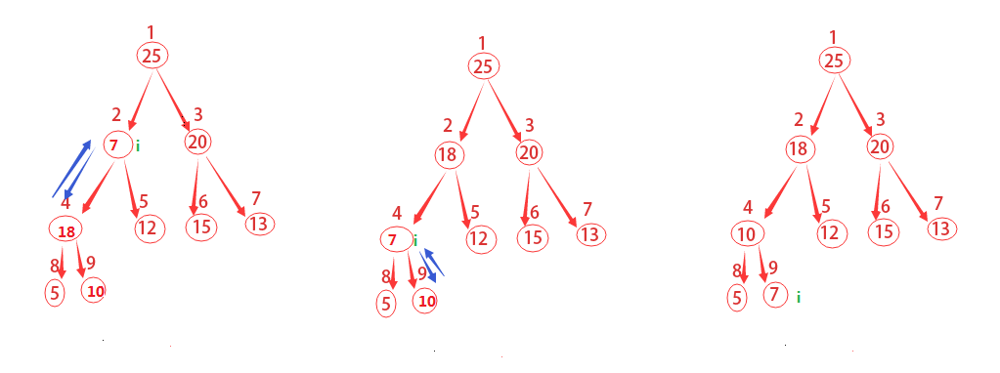
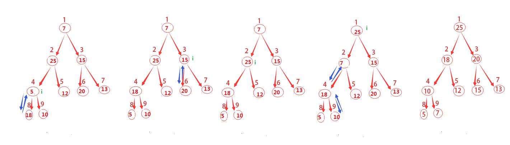
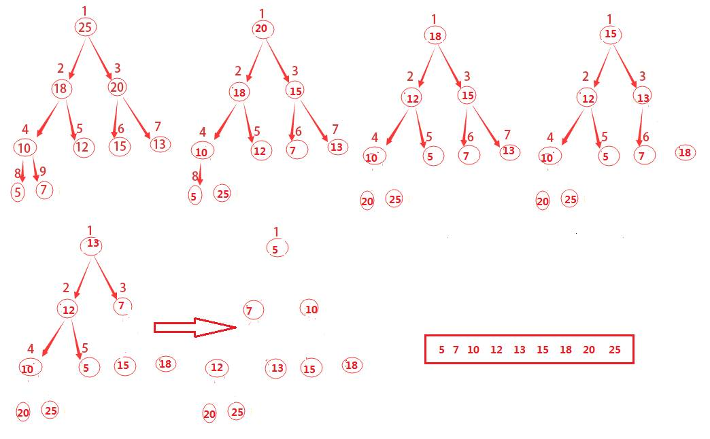
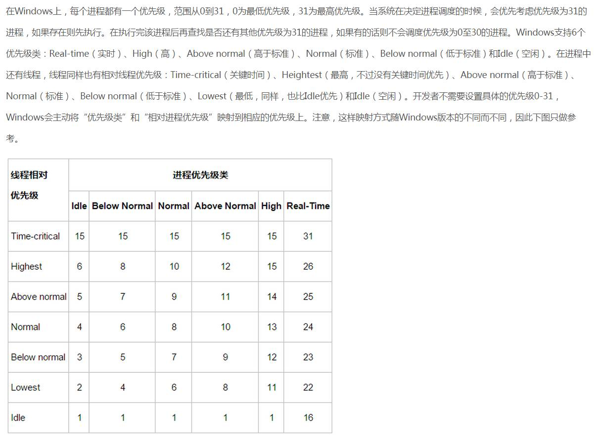
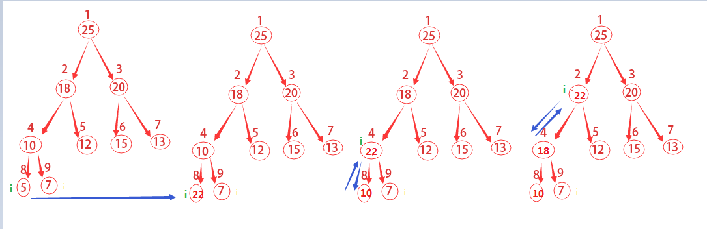
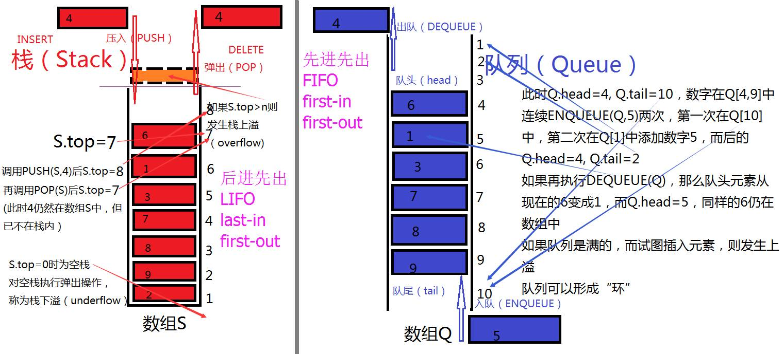
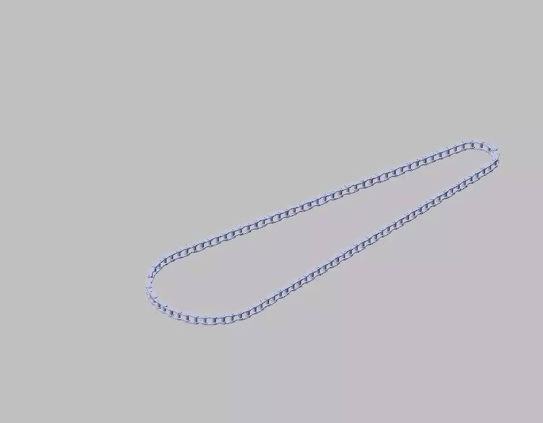
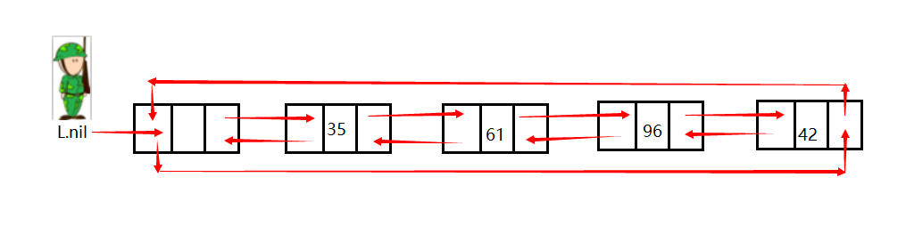

来自：nomasp柯于旺 - CSDN博客
链接：http://blog.csdn.net/nomasp/article/details/50349172（点击尾部阅读原文前往）
已获转载授权
堆（heap），是一类特殊的数据结构的统称。它通常被看作一棵树的数组对象。在队列中，调度程序反复提取队列中的第一个作业并运行，因为实际情况中某些时间较短的任务却可能需要等待很长时间才能开始执行，或者某些不短小、但很重要的作业，同样应当拥有优先权。而堆就是为了解决此类问题而设计的数据结构。
二叉堆是一种特殊的堆，二叉堆是完全二叉树或者近似完全二叉树，二叉堆满足堆特性：父节点的键值总是保持固定的序关系于任何一个子节点的键值，且每个节点的左子树和右子树都是一个二叉堆。
当父节点的键值总是大于任何一个子节点的键值时为最大堆，当父节点的键值总是小于或等于任何一个子节点的键值时为最小堆。
为了更加形象，我们常用带数字的圆圈和线条来表示二叉堆等，但其实都是用数组来表示的。如果根节点在数组中的位置是1，第n个位置的子节点则分别在2n和2n+1位置上。
如下图所描的，第2个位置的子节点在4和5，第4个位置的子节点在8和9。所以我们获得父节点和子节点的方式如下：
PARENT(i)
1 return 小于或等于i/2的最大整数
LEFT-CHILD(i)
1 return 2i
RIGHT-CHILD(i)
1 return 2i+1

假定表示堆的数组为
最大堆除了根以外所有结点i都满足：
最小堆除了根以外所有结点i都满足：
一个堆中结点的高度是该结点到叶借点最长简单路径上边的数目，如上图所示编号为4的结点的高度为1，编号为2的结点的高度为2，树的高度就是3。
包含n个元素的队可以看作一颗完全二叉树，那么该堆的高度是
程序中，不可能所有的堆都天生就是最大堆，为了更好的使用堆这一数据结构，我们可能要人为地构造最大堆。
如何将一个杂乱排序的堆重新构造成最大堆，它的主要思路是：
从上往下，将父节点与子节点以此比较。如果父节点最大则进行下一步循环，如果子节点更大，则将子节点与父节点位置互换，并进行下一步循环。注意父节点要与两个子节点都进行比较。

如上图说描述的，这里从结点为2开始做运算。先去
因此可以给出伪代码如下：
MAX-HEAPIFY(A,i)
l=LEFT-CHILD(i)
r=RIGHT-CHILD(i)
if l<=A.heap-size and A[l]>A[i]
largest=l
else
largest=i
if r<=A.heap-size and A[r]>A[largest]
largest=r
if largest != i
exchange A[i] with A[largest]
MAX-HEAPIFY(A,largest)
在以上这些步骤中，调整A[i]、A[l]、A[r]的关系的时间代价为
也就是：
前面我们通过自顶向下的方式维护了一个最大堆，这里将通过自底向上的方式通过MAX-HEAPIFY将一个
回顾一下上面的图示，其总共有9个结点，取小于或等于9/2的最大整数为4，从4+1，4+2，一直到n都是该树的叶子结点，你发现了么？这对任意n都是成立的哦。
因此这里我们就要从4开始不断的调用MAX-HEAPIFY(A,i)来构建最大堆。
为什么会有这一思路呢？
原因是既然我们知道了哪些结点是叶子结点，从最后一个非叶子结点（这里是4）开始，一次调用MAX-HEAPIFY函数，就会将该结点与叶子结点做相应的调整，这其实也就是一个递归的过程。

图示已经这么清晰了，就直接上伪代码咯。
BUILD-MAX-HEAP(A)
1 A.heap-size=A.length
2 for i=小于或等于A.length/2的最大整数 downto 1
3 MAX-HEAPIFY(A,i)
所谓的堆排序算法，先通过前面的BUILD-MAX-HEAP将输入数组
如何让原来根的子结点仍然是最大堆呢，可以通过从堆中去掉结点n，而这可以通过减少
通过不断重复这一过程，知道堆的大小从

上图的演进方式主要有两点：
1）将
2）不断调用MAX-HEAPIFY(A,1)对剩余的整个堆进行重新构建
一直到最后堆已经不存在了。
HEAPSORT(A)
1 BUILD-MAX-HEAP(A)
2 for i=A.length downto 2
3 exchange A[1] with A[i]
4 A.heap-size=A.heap-size-1
5 MAX-HEAPIFY(A,1)
下一篇博文我们就会介绍大名鼎鼎的快排，快速排序啦，欢迎童鞋们预定哦~
话说堆排序虽然性能上不及快速排序，但作为一个尽心尽力的数据结构而言，其可谓业界良心呐。它还为我们提供了传说中的“优先队列”。
优先队列（priority queue）和堆一样，堆有最大堆和最小堆，优先队列也有最大优先队列和最小优先队列。
优先队列是一种用来维护由一组元素构成的集合S的数据结构，其中每个元素都有一个相关的值，称之为关键字（key）。
一个最大优先队列支持一下操作：
这里来举一个最大优先队列的示例，我曾在关于“50% CPU 占有率”题目的内容扩展 这篇博文中简单介绍过Windows的系统进程机制。
这里以图片的形式简单的贴出来如下：

在用堆实现优先队列时，需要在堆中的每个元素里存储对应对象的句柄（handle）。句柄的准确含义依赖于具体的应用程序，可以是指针，也可以是整型数。
在堆的操作过程中，元素会改变其在数组中的位置，因此在具体实现中，在重新确定堆元素位置时，就自然而然地需要改变其在数组中的位置。
一、前面的
HEAP-MAXIMUM(A)
1 return A[1]
二、
HEAP-EXTRACT-MAX(A)
1 if A.heap-size < 1
2 error "堆下溢"
3 max=A[1]
4 A[1]=A[A.heap-size]
5 A.heap-size=A.heap-size-1
6 MAX-HEAPIFY(A,1)
7 return max
三、
和上一个函数一样，首先判断a知否比原有的关键字更大。
然后就是老办法了，不断的将该结点与父结点做对比，如果父结点更小，那么就将他们进行对换。
相信有图示会更加清楚，于是……再来一张图。

HEAP-EXTRACT-MAX(A)
1 if A.heap-size < 1
2 error "堆下溢"
3 max=A[1]
4 A[1]=A[A.heap-size]
5 A.heap-size=A.heap-size-1
6 MAX-HEAPIFY(A,1)
7 return max
在包含n个元素的堆上，HEAP-INCREASE-KEY的运行时间就是
四、
MAX-HEAP-INSERT(A,key)
1 A.heap-size=A.heap-sieze+1
2 A[A.heap-size]=-10000
3 HEAP-INCREASE-KEY(A,A.hep-size,key)
在包含n个元素的堆上，MAX-HEAP-INSERT的运行时间就是
总而言之，在一个包含n个元素的堆中，所有优先队列的操作时间都不会大于
学过没学过算法的应该都听过栈和队列了吧，往往容易弄混的就是“后进先出”和“先进先出”了。
今天又看到了“河内塔”的相关资料，也被称为“汉诺塔”等。于是就想到了画出下面这样的图案。

如果大家觉得这张图不错可以直接右键另存为哦，记得点赞哈~
那么，关于栈和队列下面就直接列出相关操作的伪代码咯。
栈
STACK-EMPTY(S)
1 if S.top==0
2 return TRUE
3 else
4 return FLASE
PUSH(S,k)
1 S.top=S.top+1
2 S[S.top]=x
POP(S)
1 if STACK-EMPTY(S)
2 error "underflow"
3 else
4 S.top=S.top-1
5 return S[S.top+1]
队列
ENQUEUE(Q,x)
1 Q[Q.tail]=x
2 if Q.tail==Q.length
3 Q.tail=1
4 else
5 Q.tail=Q.tail+1
DEQUEUE(Q)
1 x=Q[Q.head]
2 if Q.head=Q.length
3 Q.head=1
4 else
5 Q.head=Q.head+1
6 return x
原谅我拙劣的绘图能力，花了半天终于还是决定从网上找来了这三张图，因为环形链表的弧形箭头难以完美的展现出来。
以下3张图片来自Wikipedia。
大家看着图片应该也都知道这分别是哪种链表了。那么链表到底是什么呢？
它和前面的栈和队列一般，都是基本的数据结构，其中的各个对象按线性顺序排列。大家应该注意到了图中的大黑点，有些C/C++编程基础的同学肯定能够猜到链表是通过各个对象里的指针来指向下一个对象的，相比，数组则是通过下标来进行索引。
为了让大家加深印象，我们来联系到生活中的实例。
首先是单向链表（singly linked），我第一个联想到的就是下面这种铅笔，满满的儿时回忆呀！找了好久才找到这张图，却不知道它的名字。
然后是双向链表（doublely linked list），动车组则可以很好的诠释它。
循环链表（circular linked list）的应用是比较多的，从小接触的自行车链条就是其中之一。

大家要是还有什么例子欢迎在评论中留下哦。
单链表
前面已经说到了，链表通过指针来指向下一个对象。单链表中有一个关键字key和指针next，当然了，对象中还可以有其他的卫星数据。我们可以这样想象它，前面的图中是一行对吧，然后在行中的链表节点中向下延伸，每个节点都延伸成一列，简单的说，从一维变成了二维（类比二维数组）。
将链表中的一个元素设为x，那么x.key就是它的值，x.next就是链表中的后继元素。如果x.next=NIL，那么就说明没有后继元素了，因此x就是链表的尾（tail）。
双向链表
将单链表升级到双向链表来考虑，无非就是多了一个前驱，用x.prev来表示。同样的，x.prev=NIL，表示没有前驱，那么x就是链表的头（head）。而如果头都为空了，那么整个链表也就是空的了。
循环链表
相应的，循环链表也由双向链表升级而来，就是将链表尾部的元素x的next指向链表的头部y，元素头部的元素y的prev指向链表的尾部x。
搜索
我们的目的是要搜索出链表L中第一个关键字为k的元素，函数返回的将是指向该元素的指针。
如果不幸的是链表中不存在这个元素，那么就返回NIL。
LIST-SEARCH(L,k)
1 x=L.head
2 while x!=NIL and x.key!=k
3 x=x.next
4 return x
由于这个搜索是线性的，在最坏的情况下它会搜索整个链表，因此该情况下LIST-SEARCH的运行时间为
循环
接下来我们将元素x（已经设置好关键字key）插入到链表中，这个相比搜索就有些复杂，因为它要修改的东西较多一些。L.head.prev的意思是去链表的头节点元素，然后取它的prev属性。
LIST-INSERT(L,x)
1 x.next=L.head
2 if L.head!=NIL
3 L.head.prev=x
4 L.head=x
5 x.prev=NIL
它仅仅是在开头插入一个元素而已，因此耗时仅仅是
删除
我们有了一个指向x的指针，然后要将x从列表中删除掉。具体的思路也非常的简单，例如有依次链接的A、B、C三个节点，如果要将B删除掉，只需要将A的next指向C即可，如果是双线链表也请记得将C的prev指向A。
LIST-DELETE(L,x)
1 if x.prev!=NIL
2 x.prev.next=x.next
3 else L.head=x.next
4 if x.next!=NIL
5 x.next.prev=x.prev
由于这里的x已经是指针了，因此删除操作只需要
今天我忽然觉得在博客上多加点图片，即便是现在这个“哨兵”图像，虽然和链表没太大关系，但也许可以帮助记忆呢，因为记忆真的非常非常重要。
废话不多说，哨兵是什么呢，能够做什么呢？
哨兵节点常常被用在链表和遍历树中，它并不拥有或引用任何被数据结构管理的数据。常常用哨兵节点来代替null，这样的好处有以下3点：
1）增加操作的速度
2）降低算法的复杂性和代码的大小
3）增加数据结构的鲁棒性
补充：鲁棒性（robustness）是指的稳健性或稳定性，也就是说，当某个事物受到干扰时，这个东西的性质依旧稳定。网上有一个例子，在统计中，均值受到极端值的影响可谓非常之大，而在这种情况下中位数就要稳定得多。
补充：还有一个哨兵值的定义（也被称为标志值、信号值和哑值），它是在特定算法中的一个特殊值，常用它来让条件终止，由此可见它被普遍用于循环和递归之中。
简而言之，哨兵就是为了简化边界条件的处理而存在。回头看看链表的删除过程，用了两个if来判断，而用了哨兵值就大可不必这么麻烦。
LIST-DELETE'(L,x)
1 x.prev.next=x.next
2 x.next.prev=x.prev
既然是哨兵了，那么它站岗的位置自然也是在边界了，对于链表而言，那就是头部和尾部之间。

图片上下的3个箭头请大家自行脑补成一个箭头。
在有哨兵之前，我们必须通过L.head来访问表头，现在可以通过L.nil.next来访问表头了。
L.nil就是守卫链表疆土的哨兵，那么L.nil.prev就自然的指向表尾了，相应的L.nil.prev指向表头。
上面已经对删除做了修改，下面也来看看搜索和插入。
搜索
相比删除而言，搜索中原本就对边界的使用不多，此处只需将第一行的L.head换成L.nil.next和将NIL换成L.nil即可。
LIST-SEARCH'(L,k)
1 x=L.nil.next
2 while x!=L.nil and x.key!=k
3 x=x.next
4 return x
插入
和删除一样，边界的判断再也不需要了！
LIST-INSERT'(L,x)
1 x.next=L.nil.next
2 L.nil.next.prev=x
3 L.nil.next=x
4 x.prev=L.nil
哨兵的作用和注意事项
通过上面有无哨兵的3个操作也可以看出来，哨兵并没有减少算法的渐进时间界，不过可以降低常数因子，例如LIST-DELETE’和LIST-INSERT’都节约了
然而哨兵也需要慎用，正所谓”是药三分毒”，如果存在很多的短小链表，那么再给每一个链表配上一个哨兵就不划算了，因为哨兵要占用额外的存储空间，而短小的年表很多时，就造成了严重的浪费。
●本文编号65，以后想阅读这篇文章直接输入65即可。
●输入m可以获取到全部文章目录
![]()